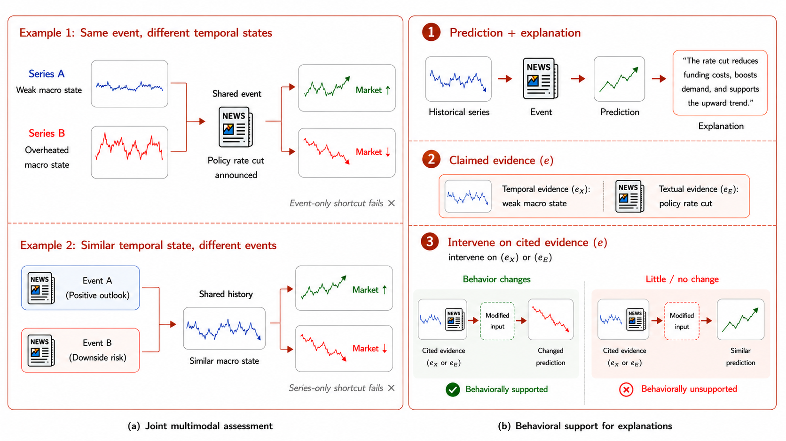
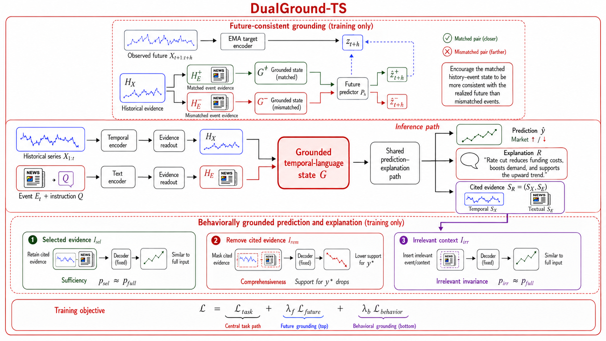

Use the history and event together
The meaning of an event depends on the state in which it occurs.
Future-consistent cross-modal integration with behaviorally grounded explanations for event-conditioned time-series prediction
A framework for event-conditioned time-series forecasting that grounds predictions in the realized future and explanations in predictive behavior.
Most models are supervised only by the final forecast. DualGround-TS also supervises how that forecast is formed: it requires the event–history representation to agree with what happens next, and requires the explanation’s cited evidence to actually affect the prediction.
The same event can imply different outcomes under different temporal states.
The correct event–history pair should fit the observed future better than a mismatched pair.
Keeping, removing, or perturbing evidence should change the forecast in the expected way.
Imagine predicting whether a stock will rise or fall. The model receives two kinds of evidence: a historical time series and a textual event. It should reason about them together—but a shortcut model may ignore one source and still guess the right answer.
The meaning of an event depends on the state in which it occurs.
A correct output alone does not prove that cross-modal reasoning happened.
DualGround adds two tests that target different failure modes.
Agreement with the future is useful, but the model might still succeed by following the historical trend alone. DualGround therefore creates a harder comparison: keep the history fixed and swap only the event.
Why this matters: because the historical series is exactly the same in both branches, the model must use the event to make the real pair win.
The model could make a grounded prediction and then attach a plausible-sounding explanation afterward.
Suppose the explanation claims that evidence A + B supports the forecast. DualGround intervenes on that evidence and checks whether the model behaves as the claim implies.
“These are the important factors behind my prediction.”
If the cited evidence is sufficient, keeping only it should preserve the prediction.
Prediction stays similarIf the cited evidence is important, deleting it should meaningfully affect the prediction.
Prediction changesIf C is unrelated, adding it should not make the prediction drift unpredictably.
Prediction remains stableWhat a faithful explanation should do: remain sufficient when retained, matter when removed, and stay selective when irrelevant context is added.
DualGround-TS therefore asks two different questions in sequence: “Did the model use the event together with the history to reach a future-consistent judgment?” and then, “Does the explanation identify the evidence that truly supports that judgment?”
01 · Why
Event-conditioned forecasting is a conditional reasoning problem: the event changes the meaning of the recent time-series state, while the state changes how the event should be interpreted. Final accuracy alone cannot tell us whether the model used that interaction.
A model may follow the historical trend and ignore the event, or react to event sentiment and ignore the temporal state. Either shortcut can succeed on easy examples without learning the intended cross-modal relationship.
So event text alone is insufficient: the model must read the temporal state to interpret the event.
So trend extrapolation alone is insufficient: the model must use the event to condition the forecast.
A fluent rationale may mention plausible factors that had little influence on the forecast. We therefore need to intervene on the cited evidence and observe whether the prediction behaves as the explanation claims.

02 · How
DualGround-TS first extracts task-relevant evidence from the time series and event text, then fuses both sources into a shared state G. The forecast and explanation are decoded from that same state, while two training objectives constrain what information G must preserve.
The temporal readout selects useful history, the event readout selects useful text, and their interaction is represented in G. Using one decoding basis ties the forecast and explanation to the same cross-modal evidence.
The historical series is held fixed while the event is changed. The state built from the real event should agree with the realized future more strongly than a state built from an incompatible event. This prevents the model from succeeding through trend extrapolation alone.
Learning rule: the matched event–history state must fit the observed future better than the mismatched state.
The evidence selected by the explanation becomes an intervention target. Retaining that evidence should preserve the forecast, removing important evidence should change it, and adding irrelevant context should leave it stable. This turns explanation faithfulness into a behavioral training signal.
Learning rule: cited evidence should be sufficient, necessary, and selective.

03 · Does it work?
The final page will report both task performance and grounding behavior.
Controlled tests of history, event, and cited evidence.
Zero-shot transfer to contextual forecasting.
Supervised adaptation across nine domains.
The reported evaluation combines task performance with tests derived directly from the two grounding objectives.
| Model | Prediction | Explanation | ||||
|---|---|---|---|---|---|---|
| Nat. | S-CF | E-CF | HPC | E-F1 | CSDR | |
| Base Model | ||||||
| Ordinary Fusion | ||||||
| DualGround-TS | ||||||
| Method | Official Metric |
|---|---|
| Base Model | |
| DualGround-TS |
| Method | Avg. | #Wins |
|---|---|---|
| Base Model | ||
| Ordinary Fusion | ||
| DualGround-TS |
| Variant | Evidence | Behavioral Support | ||
|---|---|---|---|---|
| F1 | Suff. | Comp. | CSDR | |
| Ordinary Fusion | ||||
| Shared State | ||||
| Shared Path | ||||
| DualGround-TS | ||||
04 · Examples
These illustrative examples follow the paper’s motivating cases. Change one source or intervene on cited evidence and watch how a grounded predictor should respond.
Shared event: policy rate cut announced
The event is compatible with a weak macro state and supports an upward response.
Shared history: weak macro state
The same history leads upward when paired with a rate cut.
Forecast task: electricity demand
Original
Same rental history, matched versus mismatched event
05 · Resources